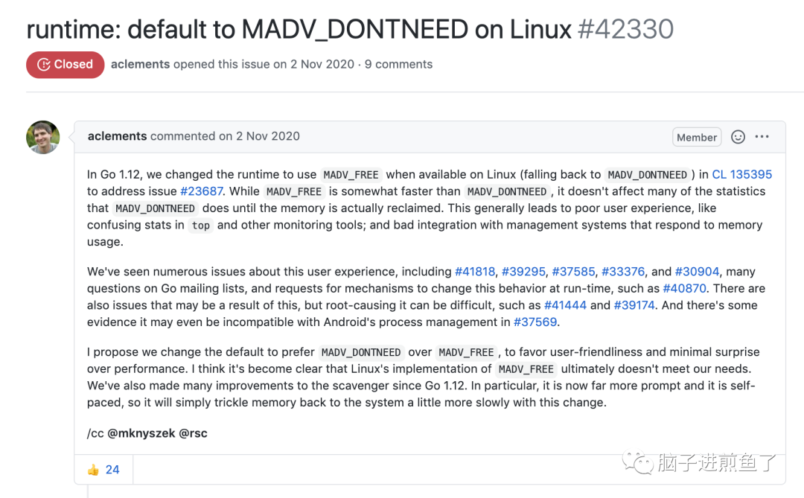

在上一篇 Go1.16 特性介绍的文章中我们有提到，从 v1.16 起，Go 在 Linux 下的默认内存管理策略会从MADV_FREE 改回 MADV_DONTNEED 策略。
这时候可能至少分两拨小伙伴，分别是：
- 知道是什么，被这个问题 “折磨“ 过的，瞬间眼前一亮。
- 不知道是什么，出现了各种疑惑了，这说的都是些什么。
灵魂拷问
你有没有以下的疑问，或者是否清楚：
- 文中所说的
MADV_FREE是什么？ - 文中所说的
MADV_DONTNEED是什么？ - 为什么特指 Go 语言的 Linux 环境？
- 为什么是说从
MADV_FREE改回MADV_DONTNEED？
在今天这篇文章中我们都将进一步的展开和说明，让我们一同来了解这个改来改去的内存机制到底是何物。
madvise 爱与恨
在 Linux 系统中，在 Go Runtime 中通过系统调用 madvise(addr, length, advise)方法，能够告诉内核如何处理从 addr 开始的 length 字节。
重点之一就是 ”如何处理“，在 Linux 下 Go 语言中目前支持两种策略，分别是（via @felix021）：
- MADV_DONTNEED：内核会在进程的页表中将这些页标记为 “未分配”，从而进程的 RSS 就会尽快释放和变小。OS 后续可以将对应的物理页分配给其他进程。
- MADV_FREE：内核只会在页表中将这些进程页面标记为可回收，在需要的时候才回收这些页面。
所带来的影响
Go 语言官方恰好就在 2019 年的 Go1.12 做了如下调整。
- Go1.12 以前。
- Go.12-Go1.15.
Go1.12 以前
Go Runtime 在 Linux 上默认使用的是 MADV_DONTNEED 策略。
1 | // 没有任何奇奇怪怪的判断 |
从整体效果来看，进程 RSS 可以下降的比较快，但从性能效率上来看差点。
Go1.12-Go1.15
当前 Linux 内核版本 >=4.5 时，Go Runtime 在 Linux 上默认使用了性能更为高效的 MADV_FREE 策略。
1 | var advise uint32 |
从整体效果来看，进程RSS 不会立刻下降，要等到系统有内存压力了才会释放占用，RSS 才会下降。
带来的副作用
故事往往不是那么的美好，显然在 Go1.12 起针对 madvise 的 MADV_FREE 策略的调整非常 “片面”。
来自社区微信群的小伙伴
结合社区里所遇到的案例可得知，该次调整带来了许多问题：
- 引发用户体验的问题：Go issues 上总是出现以为内存泄露，但其实只是未满足条件，内存没有马上释放的案例。
- 混淆统计信息和监控工具的情况：在 Grafana 等监控上，发现容器进程内存较高，释放很慢，告警了，很慌。
- 导致与内存使用有关联的个别管理系统集成不良：例如 Kubernetes HPA ，或者自定义了扩缩容策略这类模式，难以评估。
- 挤压同主机上的其他应用资源：并不是所有的 Go 程序都一定独立跑在单一主机中，自然就会导致同一台主机上的其他应用受到挤压，这是难以评估的。
从社区反馈来看是问题多多，弊大于利。
官方本想着想着性能更好一些，但是在现实场景中引发了不少的新问题，甚至有提到和 Android 流程管理不兼容的情况。
有种 “捡了芝麻，丢了西瓜” 的感觉。
Go1.16：峰回路转
既然社区反馈的问题何其多，有没有人提呢？有，超级多。

多到提出修改回 MADV_DONTNEED 的 issues 仅花了 1-2 天的时间就讨论完毕。
很快得出结论且合并 CL 关闭 issues 了。
Go1.16 修改内容如下：
1 | func parsedebugvars() { |
直接指定回了 debug.madvdontneed = 1，简单粗暴。
总结
在本篇文章中，我们针对 Go 语言在 Linux 下的 madvise 方法的策略调整进行了历史介绍和说明，同时针对其调整所带来的的副作用及应对措施进行了一一介绍。
本次变更很好的印证了，牵一发动全身的说法。大家在后续应用这块时也要多加注意。
你觉得 Go1.16 这个特性变更怎么样呢？欢迎在评论区留言。
参考
- runtime: default to MADV_DONTNEED on Linux
- 踩坑记：go 服务内存暴涨
- Go 1.12 关于内存释放的一个改进